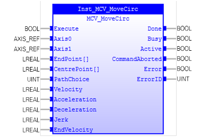

Moves 2 orthogonal axes in such a way as to produce a circular arc at the tool point.

MCV_MoveCirc is used to move 2 orthogonal axes in such a way as to produce a circular arc at the tool point. The length and radius of the arc are defined by the five parameters in the FB. The move parameters are always relative to the end of the last specified move. This is the start position on the circle circumference.
When MCV_MoveCirc is executed, Axis0 and Axis1 PLCopen states will change to ‘DiscreteMotion’.
Either Axis0 or Axis1 can be used in MC_Stop to stop motion on both axes.
Make sure the input and output parameters are of data type indicated in the table below.
An array input parameter is denoted by "[]"characters following the parameter name. Suitable array input is expected.
MCV_MoveCirc is equivalent to TrioBASIC command MOVECIRC. Please refer to TrioBasic Help for more information.
|
Name |
Data Type |
Description |
|
INPUTS |
||
|
Execute |
BOOL |
Start the motion at rising edge |
|
Axis0 |
AXIS_REF |
Reference to the axis |
|
Axis1 |
AXIS_REF |
Reference to the axis |
|
EndPoint[] |
LREAL |
Positions for Axis0 and Axis1 to finish the move at. It is an array with 2 members. |
|
CentrePoint[] |
LREAL |
Positions for Axis0 and Axis1 about which to move. It is an array with 2 members. |
|
PathChoice |
UINT |
0: Arc is interpolated in an anti-clockwise direction 1: Arc is interpolated in a clockwise direction 2: Arc is interpolated using the shortest path to endpoint 3: Arc is interpolated using the longest path to endpoint |
|
Velocity |
LREAL |
The vector velocity to move |
|
Acceleration |
LREAL |
Value of the acceleration |
|
Deceleration |
LREAL |
Value of the deceleration |
|
Jerk |
LREAL |
Value of the jerk |
|
EndVelocity |
LREAL |
The finishing vector speed |
|
OUTPUTS |
||
|
Done |
BOOL |
Motion is finished |
|
Busy |
BOOL |
Indicates that the FB has control on the axis |
|
Active |
BOOL |
Motion in execution |
|
CommandAborted |
BOOL |
'Command' is aborted by another command |
|
Error |
BOOL |
Signals that an error has occurred within the FB |
|
ErrorID |
UINT |
Error identification |